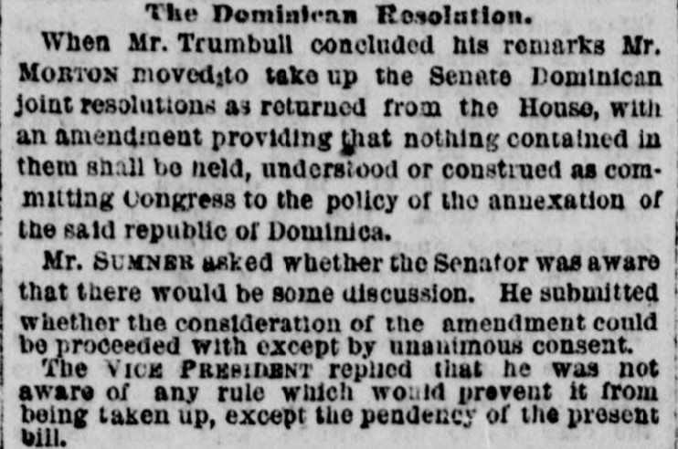
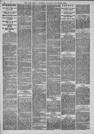

See the full pageVer la página completaThe report covers a Senate debate on the annexation of St. DomingoEl informe cubre un debate en el Senado sobre la anexión de Santo Domingo
The report covers a Senate debate on the annexation of St. Domingo, in which one speaker denounced the scheme as a private, corrupt job, saying the annexation would be only of husks because the kernels had already gone to private parties. Other senators spoke on both sides: Mr. Hoar of Massachusetts refused to support the measure out of respect for the President, Mr. Stevenson of Ohio favored acquiring Dominica for its minerals, harbors and fertile soil, and a dispatch was read announcing that the Indiana Senate had instructed its senators to vote against annexation.El informe cubre un debate en el Senado sobre la anexión de Santo Domingo, en el que un orador denunció el plan como un negocio privado y corrupto, diciendo que la anexión sería solo de cáscaras porque el grano ya había ido a parar a manos privadas. Otros senadores hablaron en ambos sentidos: el Sr. Hoar, de Massachusetts, se negó a apoyar la medida por respeto al Presidente, el Sr. Stevenson, de Ohio, favoreció adquirir Dominica por sus minerales, puertos y suelo fértil, y se leyó un despacho que anunciaba que el Senado de Indiana había instruido a sus senadores a votar contra la anexión.
Throughout the debate, the speakers call the country 'Dominica.' They mean the Dominican Republic, not the island of Dominica.Durante todo el debate, los oradores llaman al país «Dominica». Se refieren a la República Dominicana, no a la isla de Dominica.
The New York Herald. New York, January 11, 1871.
See the original at the Library of CongressVer el original en la Biblioteca del Congreso
Also published as the New York Daily HeraldTambién publicado como New York Daily Herald
Published by: James Gordon BennettPublicado por: James Gordon Bennett
Edition: Morning Edition (Edition 1)Edición: edición de la mañana (edición 1)
Page: 4, in a 12-page issuePágina: 4, en un ejemplar de 12 páginas
Frequency: daily (1840–1920)Frecuencia: diario (1840–1920)
Collection: Chronicling America, Library of CongressColección: Chronicling America, de la Biblioteca del Congreso
LCCN: sn83030313LCCN: sn83030313
ISSN: 2474-3224ISSN: 2474-3224
OCLC: 9467138OCLC: 9467138
Call Number: Newspaper E457.5 .N3Signatura (Call Number): Newspaper E457.5 .N3
Rights: public domain, according to the Library of CongressDerechos: dominio público, según la Biblioteca del Congreso